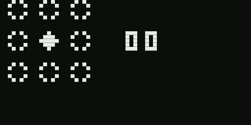
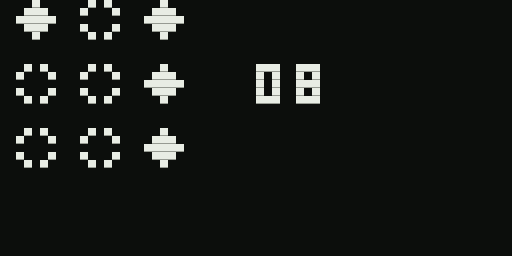
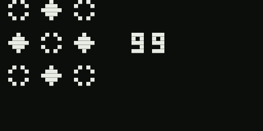

The Black Hole
Graeme V. Samways · DREAMER no. 12 (1981-08) p. 15 1K RAM



A 3x3 universe in which each location is either a black hole or a star. Shooting a star turns it into a black hole and complements the other states in its galaxy. Aim for a central black hole surrounded by eight stars in as few turns as possible; all black holes loses with a score of 99.
Keys
1-9 shoot that location.
Files
| File | Version | Load | Run |
|---|---|---|---|
| The Black Hole.c8 | main | 0200-0313 | C000 |
Listing as transcribed (with notes): the_black_hole.txt
Source
DREAMER no. 12 on archive.org, p. 15 (PDF page 17). Author: Graeme V. Samways.
Corrections applied
None.
Open doubts
- 0306 = 20C0 instead of 2000 is harmless; 0312 = 00D4 is unused.